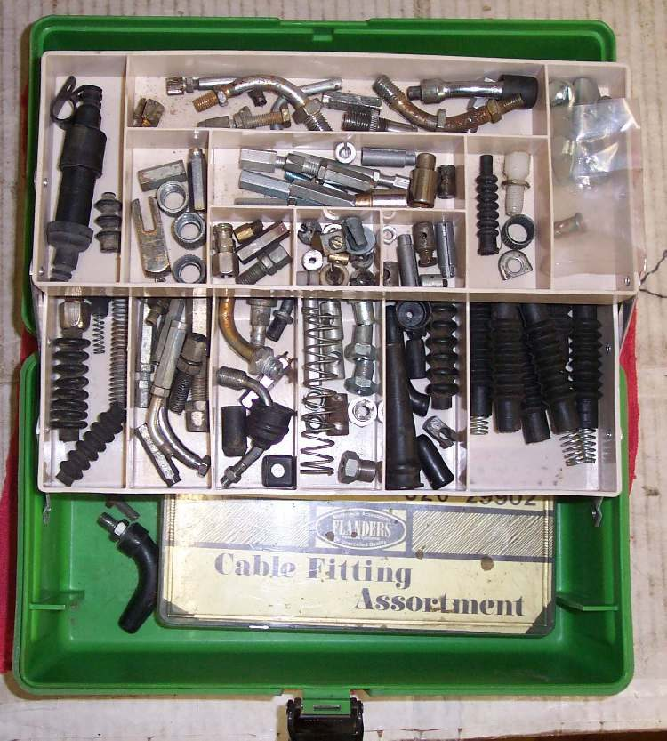

Control cables (Bowden cables) are an inner wire that slides inside an outer casing. The inner pushes or pulls, but does not twist. Workshops keep brass ends, rolls of inner wire and rolls of outer casing to repair a broken cable or build a custom one.
What it does
Brass ends are soldered onto the inner wire to make a nipple or barrel that fits the lever, the grip or the engine end. Factory cables use steel ends pressed on by machine, which are stronger.
Signs it is worn or failing
- A nipple has pulled off or the wire has broken next to it: A control cable is frayed or stiff, Clutch lever has no resistance.
When to use it
- A get-home repair of a clutch, choke or decompression cable.
- Custom cables for different handlebars, where no factory cable fits.
- For throttle and front brake cables, a new factory cable is the safer choice.
What to match when buying
- End shape and size: barrel, ball, pear or flat, with the right hole for the wire. Kits hold dozens of styles.
- Inner wire diameter and outer casing size to match the original cable.
- Keep special fittings and adjusters from old factory cables: they often cannot be bought.
Fitting notes
- Peen the wire over the end before soldering, and do not let solder run up the wire. See Solder a new end onto a control cable and Make a control cable to a custom length.